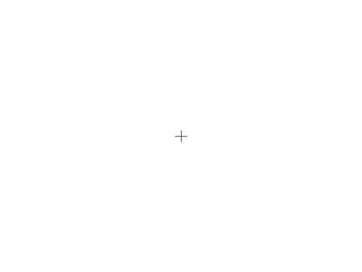

Welcome! Before we begin the main task, we’d like to provide a brief example to help you understand what to expect.
Please follow the on-screen instructions at your own pace.
This is the first image in the example pair. Something in the image will change.
Please pay attention to the details. Click Next to continue.
This is the second image in the example pair. Something in the image has changed.
Try to spot the change compared to the previous image. Click Next to continue.
The highlighted area below shows where the change occurred.
In the main task, you will be asked to click on the changed area in the second image of each pair. Click Next to continue.
In the actual task, two images will be shown one after another in each trial. Your task is to click on the area that has changed in the second image.
Please try to respond as quickly and accurately as you can. Start the experiment when you are ready.